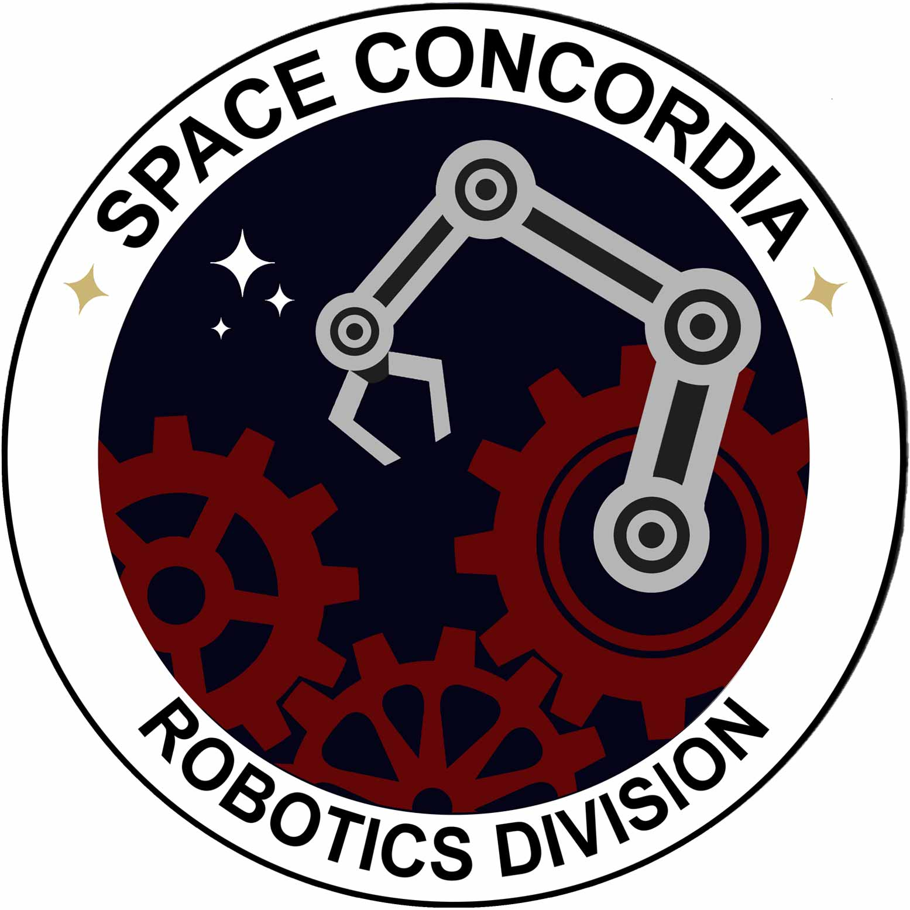

About Me
-
Computer Engineering at Concordia University, Montreal (Canada)
Professional Experiences
- Software Developer, Networking & Systems
 Kaloom (Aug. 2017 - Present)
Kaloom (Aug. 2017 - Present)
- Software Developer, Emerging Technologies R&D
 JDA (Mar. 2017 - Aug. 2017)
JDA (Mar. 2017 - Aug. 2017)
- Software Developer, Corporate & Investment Banking
Société Générale (Nov. 2016 - Mar. 2017)
- Consultant, Infrastrucutre Engineering
Morgan Stanley (Jul. 2015 - Nov. 2016)
- IT Consultant, Infrastrucutre Improvment
Hermes Medical Solutions (May 2012 - June 2015)
Engineering Projects
 Nanosatellite Design
Nanosatellite Design
-
Desinging, building and testing a space-worthy nanosatellite (30cm x 10cm x 10cm).
Won first place in the Canadian Satellite Design Challenge.
-
Multidisciplary project: mechanical, electrical and software systems
-
Reverse engineered UART protocol for transceiver
-
Designed communication protocol to provide reliable wireless communication over AX.25 link
-
Coded userspace drivers for embedded Linux platform
-
 University Rover Challenge
-
Electrical Subsystem
● Determined system requirements and project risks
● Coded video streaming software module, in C#
● Developed PID motor controller using microcontroller and various hardware (digital, analog and I2C ICs)
● Developed visualization and interfacing software for motor controller in C#, displaying plotted real-time sensor data and tuning tools
● Designed and realized rover’s communication subsystem, while considering software team’s needs, necessary for rover teleoperation
● Coded custom network benchmark tool to profile communication subsystem performance (throughput, latency, TCP vs UDP, packet loss)
-
Communication Module